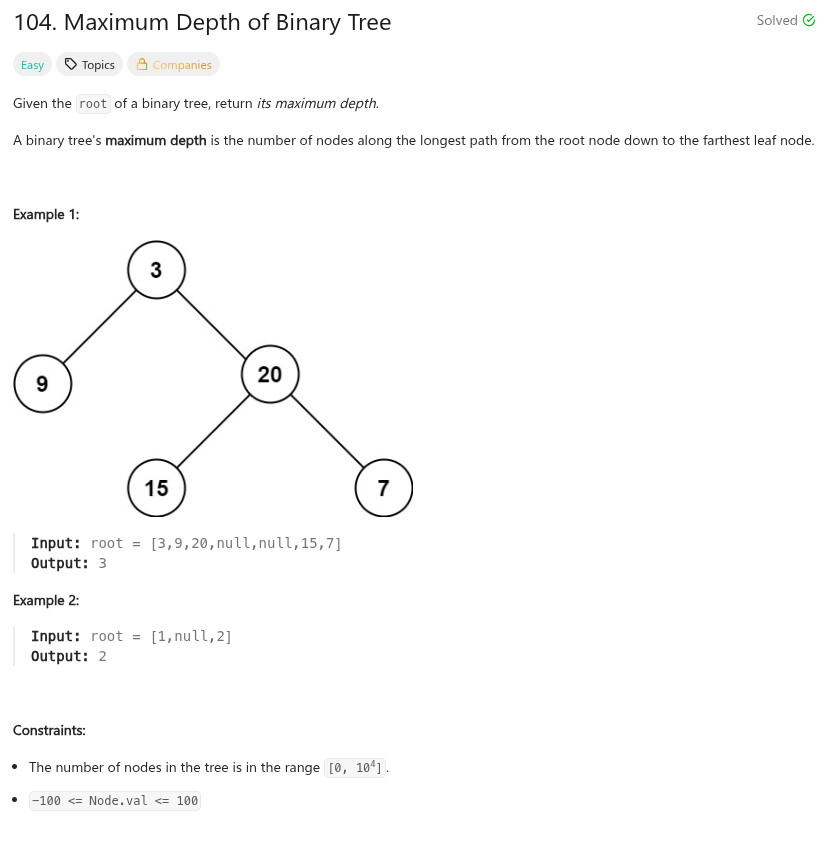

參考資訊：
https://www.cnblogs.com/grandyang/p/4051348.html
題目：

/**
* Definition for a binary tree node.
* struct TreeNode {
* int val;
* struct TreeNode *left;
* struct TreeNode *right;
* };
*/
int max(int a, int b)
{
return (a > b) ? a : b;
}
int maxDepth(struct TreeNode* root)
{
if (!root) {
return 0;
}
return 1 + max(maxDepth(root->left), maxDepth(root->right));
}